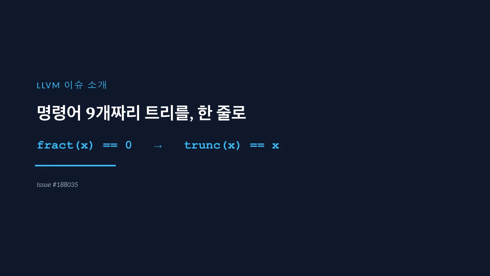
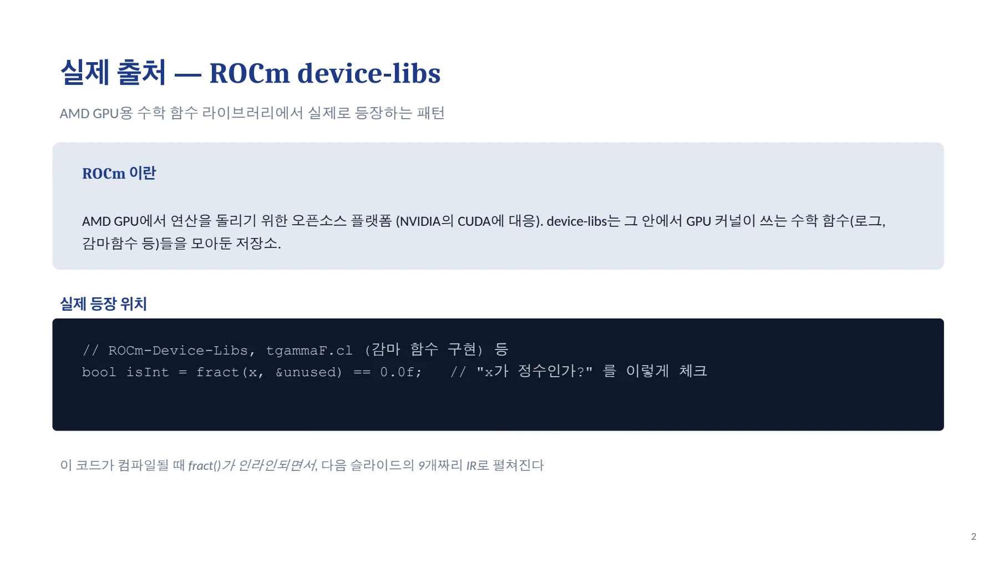
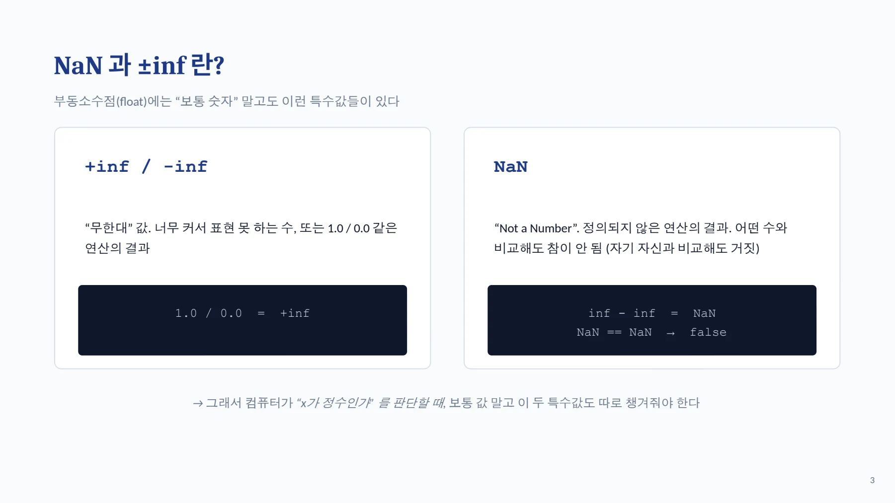
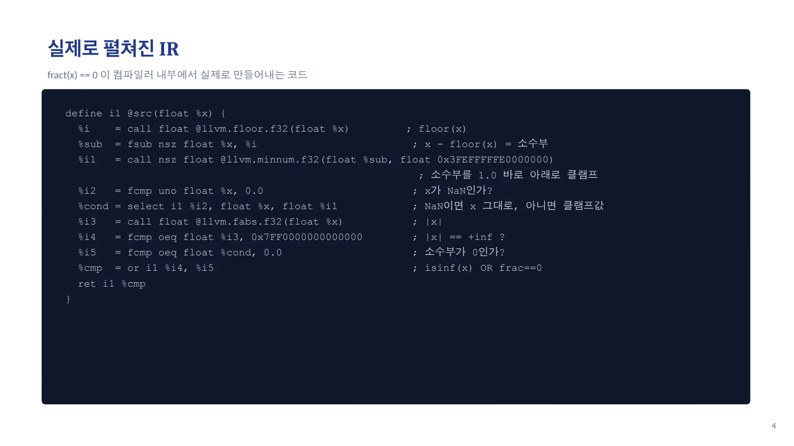
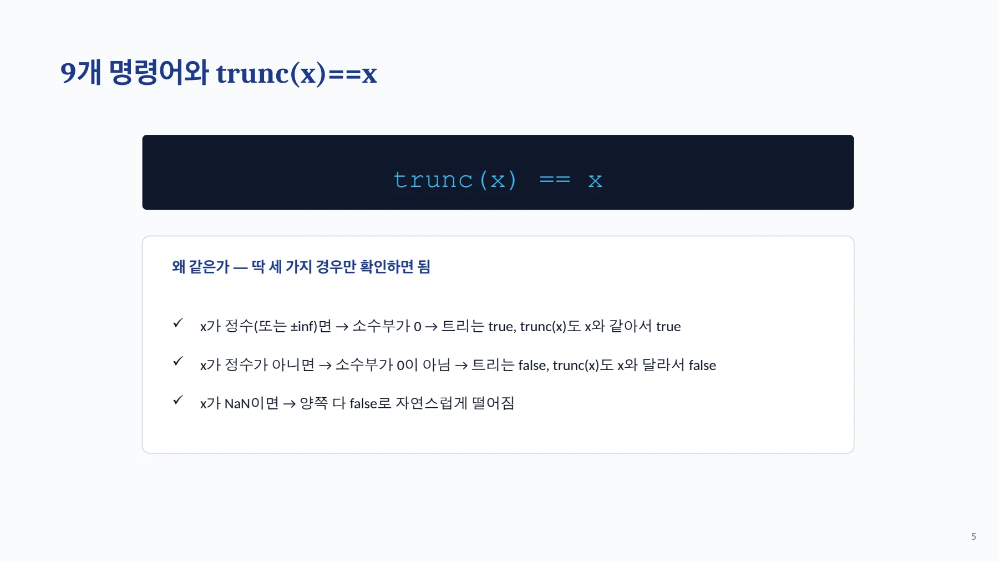
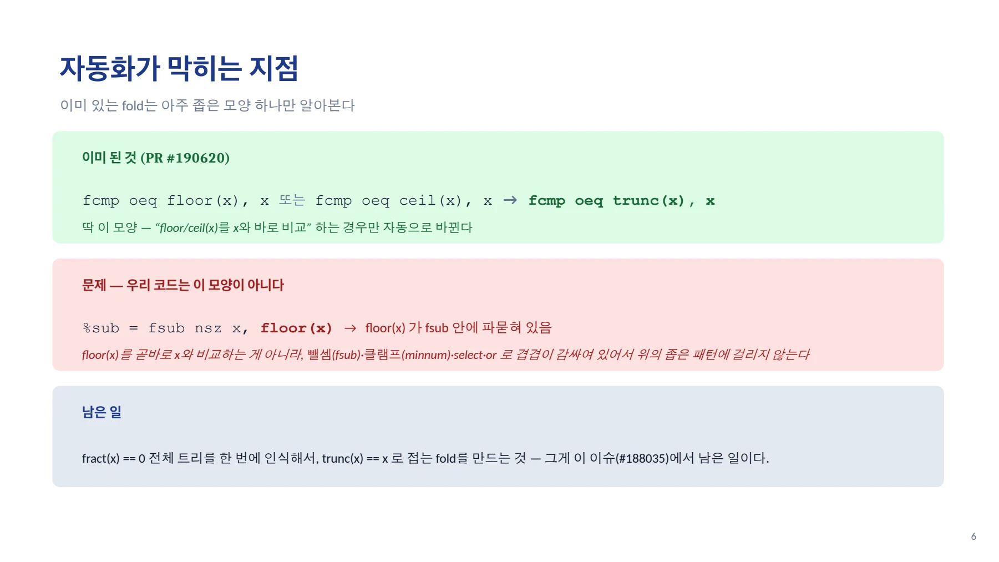

COMPLETE DOCUMENT / PPTX
fract 기반 정수 판정을 trunc 비교로 바꾸기
ROCm 수학 라이브러리에서 나온 9개 명령어의 패턴을 하나의 정수 판정으로 분석한다.
llvm_issue_188035.pptx의 전체 내용입니다. 설명·코드·표·검증 기록을 생략하지 않고 옮겼습니다.
읽기 방식두 보기 모두 이 페이지에서 확인할 수 있습니다.
이 문서의 목차
PPTX · 01 / 07
LLVM 이슈 소개 / 명령어 9개짜리 트리를, 한 줄로
fract(x) == 0 → trunc(x) == x페이지 배치·기호·도식 확인하기


PPTX · 02 / 07
실제 출처 — ROCm device-libs / AMD GPU용 수학 함수 라이브러리에서 실제로 등장하는 패턴
// ROCm-Device-Libs, tgammaF.cl (감마 함수 구현) 등
bool isInt = fract(x, &unused) == 0.0f; // "x가 정수인가?" 를 이렇게 체크페이지 배치·기호·도식 확인하기


PPTX · 03 / 07
NaN 과 ±inf 란? / 부동소수점(float)에는 “보통 숫자” 말고도 이런 특수값들이 있다
+inf / -infNaN1.0 / 0.0 = +infinf - inf = NaN
NaN == NaN → false페이지 배치·기호·도식 확인하기


PPTX · 04 / 07
실제로 펼쳐진 IR / fract(x) == 0 이 컴파일러 내부에서 실제로 만들어내는 코드
define i1 @src(float %x) {
%i = call float @llvm.floor.f32(float %x) ; floor(x)
%sub = fsub nsz float %x, %i ; x - floor(x) = 소수부
%i1 = call nsz float @llvm.minnum.f32(float %sub, float 0x3FEFFFFFE0000000)
; 소수부를 1.0 바로 아래로 클램프
%i2 = fcmp uno float %x, 0.0 ; x가 NaN인가?
%cond = select i1 %i2, float %x, float %i1 ; NaN이면 x 그대로, 아니면 클램프값
%i3 = call float @llvm.fabs.f32(float %x) ; |x|
%i4 = fcmp oeq float %i3, 0x7FF0000000000000 ; |x| == +inf ?
%i5 = fcmp oeq float %cond, 0.0 ; 소수부가 0인가?
%cmp = or i1 %i4, %i5 ; isinf(x) OR frac==0
ret i1 %cmp
}페이지 배치·기호·도식 확인하기


PPTX · 05 / 07
9개 명령어와 trunc(x)==x / trunc(x) == x
trunc(x) == x페이지 배치·기호·도식 확인하기


PPTX · 06 / 07
자동화가 막히는 지점 / 이미 있는 fold는 아주 좁은 모양 하나만 알아본다
fcmp oeq floor(x), x 또는 fcmp oeq ceil(x), x → fcmp oeq trunc(x), x페이지 배치·기호·도식 확인하기


PPTX · 07 / 07
한 줄 정리 / 명령어 9개짜리 트리를, trunc(x)==x 로 접는다
페이지 배치·기호·도식 확인하기

핵심 원리와 편집 주석
실제 코드와 문제
ROCm device-libs의 감마 함수 구현에는 fract(x) == 0 형태의 정수 판정이 등장한다. 인라인 이후에는 floor, 뺄셈, minnum, 특수값 검사와 선택이 결합된다.
TEXT
복잡한 fract(x) == 0 패턴
↓
trunc(x) == x여기서 trunc는 부동소수점의 소수 부분을 버리는 연산이다. 정수 타입으로 비트를 자르는 LLVM IR의 trunc 명령과 구분한다.
입력별 의미
- 유한한 정수 입력에서는 trunc 결과가 입력과 같다.
- 유한한 비정수 입력에서는 trunc 결과가 입력과 다르다.
- NaN·무한대는 원래 트리의 특수값 처리와 함께 확인해야 한다.
자료는 특수값 경로를 포함한 전체 IR을 제시한다. 한 부분식만 떼어 일반적인 fract 정의와 같다고 가정하면 안 된다.
기존 fold와 남은 범위
연결된 PR #190620은 이미 더 좁은 패턴을 처리한다. 이슈 #188035의 과제는 복잡한 fract 트리 전체를 인식하는 것이다.
기존 fold가 도착점의 일부를 처리한다는 사실과, 이슈 전체가 해결되었다는 판단은 구분해야 한다.
구현 전 확인할 내용
- 실제 라이브러리에서 생성된 IR을 최소화한다.
- NaN·무한대·signed zero 입력의 결과를 정리한다.
- Alive2가 지원하는 범위에서 변환을 확인한다.
- 기존 matcher와 겹치는 부분을 찾는다.
- 전체 트리와 부분 패턴의 positive·negative 테스트를 나눈다.
문서 전문과 버전
- PPTXPPTX 원자료 · 7장llvm_issue_188035.pptx
각 자료는 별도의 버전입니다. 같은 주제라도 구현 상태·설명 범위·수치가 다를 수 있습니다.
관련 이슈와 PR
구현·병합 상태와 측정값은 해당 제출 자료의 작성 시점 기준입니다.